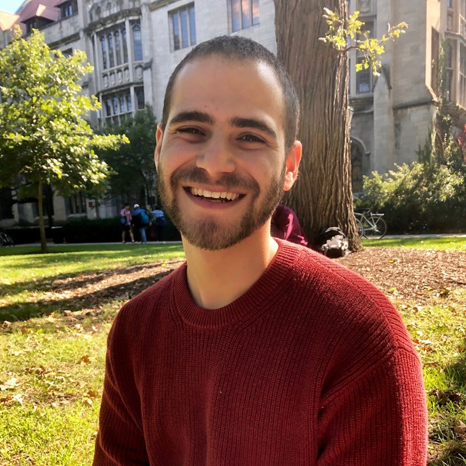

(Page still under construction)
Hi there! I'm Hillel (or Hilly) Steinmetz and I'm linguist and researcher with a deep love of learning.
At the moment, I'm looking for employment. I have plenty of skills that are transferable to many roles. I'm pretty good at writing and editing (I especially love turning technical stuff into stories). You can check out my articles in the Chicago Maroon here. I also have some experience in data manipulation, visualization, and analysis. I can work with R, SPSS, Excel, and have some basic programming experience. I love a challenge and always welcome opportunities to learning new things.
If you'd like, you can check out my resume by clicking here.
Until recently, I've worked as a research assistant at the University of Chicago's Department of Psychology where I was involved with project on the psychology of civic virtue, the social effects of metaphorical language, and how meaning is conveyed through paralinguistic (e.g., pitch) gestures.
My current interests, however, are in social psychology and sociology. I'm fascinated bythe ways in which individuals are shaped by their communities and societies. I'm particularly interested in the parts of our lives that inform our political decisions, especially religion.
You can check out my academic CV by clicking here.